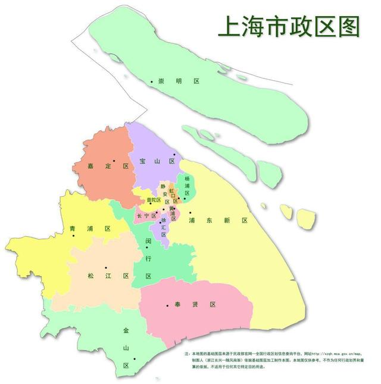

| Chinese name | Foreign Name | District | Area | population size | Famous tourist attractions |
|---|---|---|---|---|---|
| 上海市 | Shanghai City | the People's Republic of China | 6340.5 km² | 2475.89 ten thousand | the Bund |
Also known as Shanghai or Shen. The municipal government is located at 200 Renmin Avenue, Huangpu District. At the end of 2016, the total area of the city was 6340.50 Square kilometre. The registered residence is 14.5 million. The permanent population is 24.197 million, including 9.802 million outsiders. It has jurisdiction over 16 municipal districts, 105 streets (1 more than the end of last year), 107 towns, 2 townships (214 township level Administrative division in total, 1 more than the end of last year), 4254 neighborhood committees (100 more than the end of last year), and 1590 village committees (3 less than the end of last year).。
Huangpu District covers an area of 20.52 Square kilometre, including 1.81 Square kilometre of water area.
The registered residence population is 861200 (data at the end of 2016, the same below); The permanent
population is 656200, including 166600 migrant population. It has jurisdiction over 10 streets: Nanjing East
Road Street, the Bund Street, Bansongyuan Road Street, Xiaodongmen Street, Yu Garden Street, Laoximen Street,
Wuliqiao Street, Dapuqiao Street, Huaihai Road Street, and Ruijin Second Road Street. There are a total of 183
neighborhood committees (data from the end of 2016, the same below). The district government is located at 300
Yan'an East Road, Bund Street.
Xuhui District covers an area of 54.93 Square kilometre. The registered residence population is 920800; The
permanent population is 1.0856 million, including 267500 migrant population. It has jurisdiction over 12
streets and 1 town: Tianping Road Street, Hunan Road Street, Xietu Road Street, Fenglin Road Street, Changqiao
Street, Tianlin Street, Hongmei Road Street, Kangjian Xincun Street, Xujiahui Street, Lingyun Road Street,
Longhua Street, Caohejing Street, Huajing. There are a total of 305 neighborhood committees (an increase of 2
compared to the end of the previous year). The district government is located at 336 Caoxi North Road,
Xujiahui Street.
Changning District covers an area of 37.19 Square kilometre. The registered residence population is 583300;
The permanent population is 688700, including 167500 outsiders. Jurisdiction over 9 streets and 1 town:
Huayang Road Street, Jiangsu Road Street, Xinhua Road Street, Zhoujiaqiao Street, Tianshan Road Street,
Xianxia Xincun Street, Hongqiao Street, Chengjiaqiao Street, Beixinjing Street, and Xinjing Town. There are a
total of 185 neighborhood committees. The district government is located at No. 599 Changning Road, Jiangsu
Road Street.
Jing'an District covers an area of 36.88 Square kilometre. The registered residence population is 950000; The
permanent population is 1.0678 million, including 260800 migrant population. It has jurisdiction over 13
streets and 1 town: Jiangning Road Street, Shimen Second Road Street, Nanjing West Road Street, Jing'an Temple
Street, Caojiadu Street, Tianmu West Road Street, Beizhan Street, Baoshan Road Street, Gonghe New Road Street,
Daning Road Street, Pengpu New Village Street, Linfen Road Street, Zhijiang West Road Street, Pengpu Town.
There are a total of 275 neighborhood committees (an increase of 1 compared to the end of the previous year)
and 1 village committee. The district government is stationed at No. 370 Changde Road, Jiangning Road Street.
Welcome to Shanghai